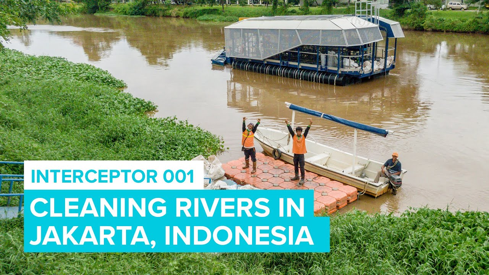
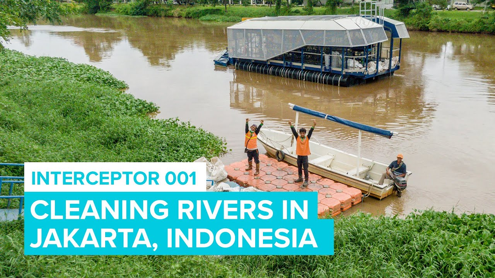

.png)


 

Indonesia berhubungan dengan negara California, Kanada, Norwegia, Belanda, Inggris, Jepang, Australia, dan negara lainnya untuk mengatasi masalah sampah plastik di lautan. Melalui inisiatif global seperti Clean Seas Campaign, yang telah didukung oleh organisasi PBB (Perserikatan Bangsa-Bangsa). California, sebagai salah satu pelopor dalam kebijakan anti plastik di Amerika Serikat, bekerja sama dengan negara-negara lain, termasuk Indonesia untuk mengembangkan solusi ekonomi sirkular. Salah satu kerjasamanya adalah melaluI Ocean Cleanup, proyek yang didanai oleh beberapa perusahaan besar, untuk mengurangi sampah plastik di Samudra Pasifik yang juga berdampak pada daerah pesisir Indonesia.
Indonesia memainkan peran penting dalam kerja sama multilateral untuk mengatasi masalah sampah plastik, terutama dalam inisiatif global seperti Clean Seas Campaign yang dipimpin oleh PBB. Sebagai salah satu negara kepulauan terbesar di dunia, Indonesia sangat terpengaruh oleh polusi plastik di lautan, sehingga pemerintah Indonesia berkomitmen untuk mengurangi sampah plastik laut hingga 70% pada tahun 2025. Komitmen ini diperkuat melalui kerja sama dengan negara-negara seperti California, Norwegia, Belanda, Jepang, Inggris, Kanada, dan Australia, yang menyediakan dukungan teknologi, pengetahuan, dan pendanaan.
Dalam proyek Ocean Cleanup, Indonesia terlibat secara aktif, terutama karena wilayah perairannya yang luas di Samudra Pasifik terkena dampak polusi plastik. Pemerintah Indonesia bekerja sama dengan organisasi internasional dan perusahaan besar yang mendanai proyek ini untuk mengimplementasikan teknologi pengumpulan sampah plastik di laut, termasuk di sungai-sungai besar yang menjadi sumber utama polusi plastik. Selain itu, Indonesia juga berkolaborasi dengan negara-negara mitra untuk mempromosikan ekonomi sirkular, yang melibatkan upaya pengurangan plastik sekali pakai, daur ulang, serta pengembangan industri yang mendukung bahan ramah lingkungan, sehingga bisa menjadi solusi jangka panjang bagi pengelolaan sampah plastik di negara tersebut.